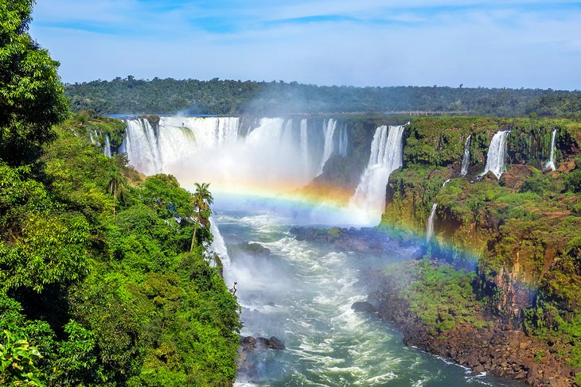

TOP 5 Best Falls in the World
“There's no better place to find yourself than sitting by a waterfall and listening to its music” ― Roland R Kemler
1. Angel Falls, Venezuela
Located in Venezuela, Angels Falls is the world's highest waterfall at a staggering 979 meters or 3,212 feet – this is 15 times higher than Niagara Falls for comparison. The water comes from the Churun River and does a free-fall drop over the edge of a mountain into a set of white water rapids below. There is a second drop of 30 meters just beyond the rapids.
2. Iguazu Falls, Argentina/Brazil
Iguazu Falls is actually a chain of hundreds of individual waterfalls stretched out almost three kilometers to create the world's largest waterfall on the border between Brazil and Argentina on the Iguazu River. The visual and sound effects of all this water tumbling down some 70 meters is truly like nothing else in the world.

3. Victoria Falls, Zimbabwe/Zambia
On the Zambezi River between Zimbabwe and Zambia, the UNSECO World Heritage site of Victoria Falls is another of the planet's most beautiful and impressive waterfalls. It's known locally as "The Smoke that Thunders."During the rainy season, you can expect to get soaked walking along the trail on the Zimbabwe side, where the best views of the falls are found.

4. Havasu Falls, Arizona, USA
Havasu falls is the most beautiful of the five Havasupai Waterfalls that plummet over orange-red cliffs into bright turquoise-blue pools in a side canyon of the Grand Canyon.
5. Niagara Falls, USA/Canada
It isn't the tallest waterfall in the world, but Niagara Falls is certainly impressive in its scope and power. Niagara Falls is comprised of three waterfalls, the largest of which is Horseshoe Falls. Straddling the border between the USA and Canada, the water cascades 614 feet down Niagara Gorge.
OTHER 5 MOUNTAINS TO HIKE
Enjoy beautiful places in the world